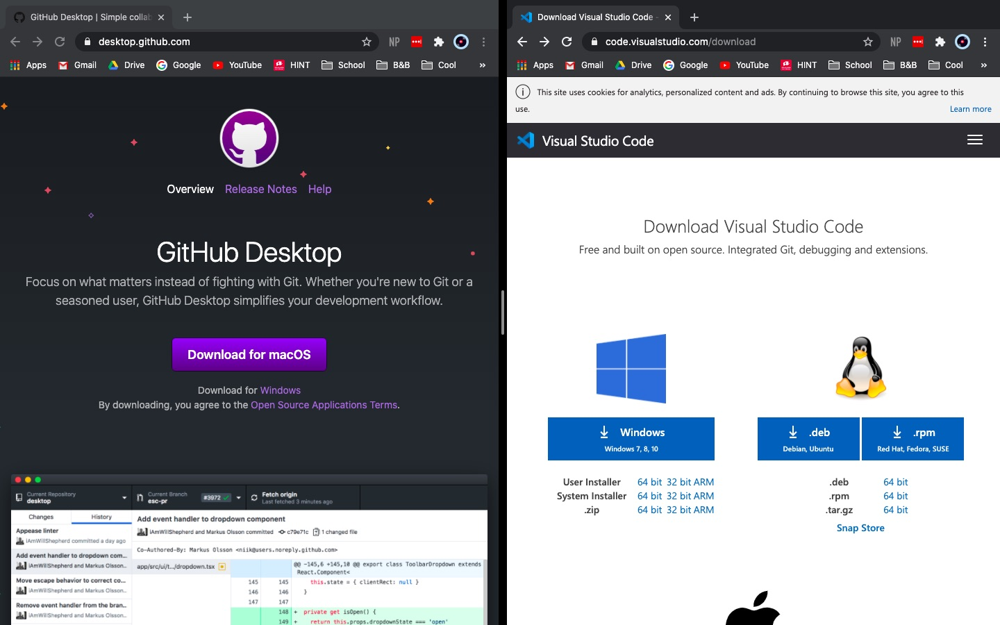
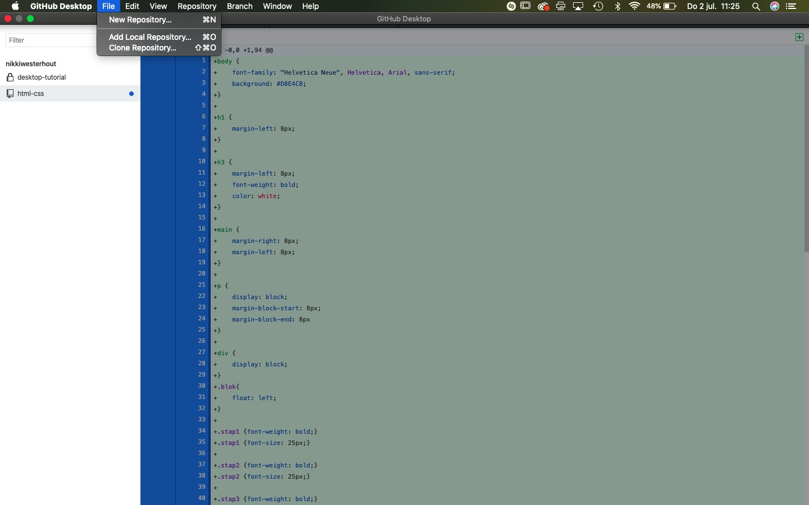
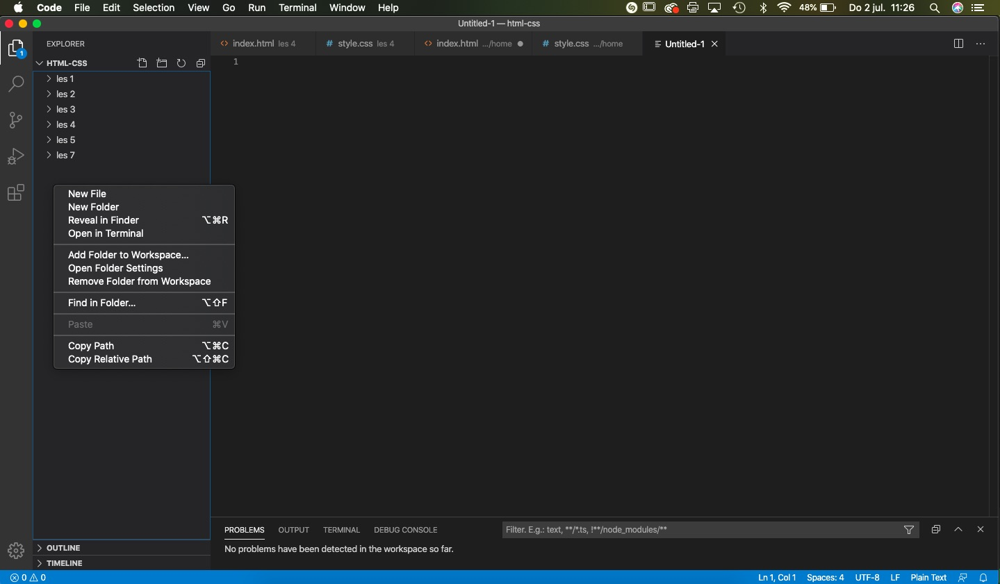
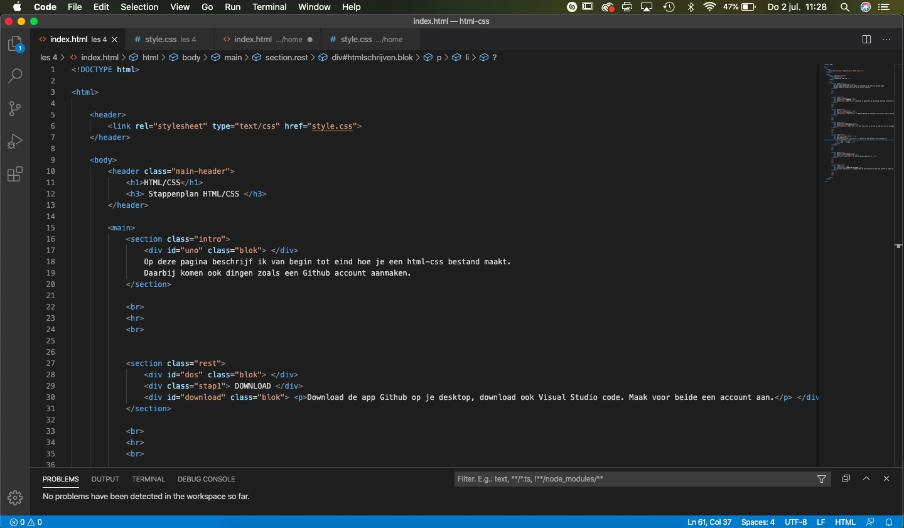
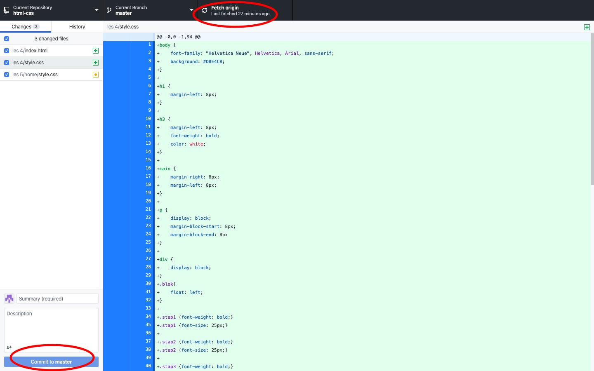

DOWNLOAD
Download de app Github op je desktop, download ook Visual Studio code. Maak voor beide een account aan.

REPOSITORY
Maak op Github een repository aan en kies "show in VS-code"

VS-CODE FILES
Kies "new file" in VS-code en stop deze file in het gewenste mapje. Noem je file "index.html"

HTML SCHRIJVEN
Schrijf je html bestand. Dit zijn tags als:

VS-CODE FILES
Sla het bestand goed op!
COMMITTEN EN PUSHEN
Open Github en dan verschijnt je new file. Select en commit to master + push to orgin.
